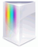
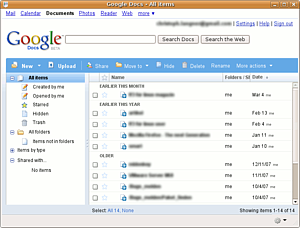
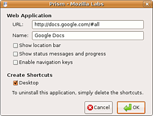

Prism
Archivierte Anleitung
Dieser Artikel wurde archiviert, da er - oder Teile daraus - nur noch unter einer älteren Ubuntu-Version nutzbar ist. Diese Anleitung wird vom Wiki-Team weder auf Richtigkeit überprüft noch anderweitig gepflegt. Zusätzlich wurde der Artikel für weitere Änderungen gesperrt.
Anmerkung: Mozilla Prism ist nicht mehr Bestandteil der offiziellen Paketquellen. Darüber hinaus wurde die Entwicklung eingestellt.
Zum Verständnis dieses Artikels sind folgende Seiten hilfreich:

Prism  ist ein Projekt der Mozilla Foundation und basiert auf der Technik und den Bibliotheken des Browsers Firefox. Das Programm bringt Webapplikation wie z.B. Google Docs direkt auf den Desktop, ohne den "Umweg" über den Browser. Prism kann jede normale Webseite mit JavaScript, Ajax oder HTML anzeigen.
ist ein Projekt der Mozilla Foundation und basiert auf der Technik und den Bibliotheken des Browsers Firefox. Das Programm bringt Webapplikation wie z.B. Google Docs direkt auf den Desktop, ohne den "Umweg" über den Browser. Prism kann jede normale Webseite mit JavaScript, Ajax oder HTML anzeigen.
Man könnte auch vereinfacht sagen, dass Prism ein Firefox ohne Navigationsleiste, Menüs etc. ist. So können Webapplikation als eigenständige Anwendungen im eigenen Fenster laufen, als ob es herkömmliche Programme wären. Natürlich ist zum Betrieb weiterhin ein bestehender Internetzugang nötig.
Anfang 2011 wurde beschlossen, die Projektkonzepte unter dem Namen Chromeless weiterzuführen. Damit wird Prism nicht mehr weiterentwickelt.
Installation¶

Paketquellen¶
Prism kann bis Ubuntu 10.10 direkt aus den offiziellen Paketquellen installiert [1] werden. Dazu ist das folgende Paketes notwendig:
prism (universe)
 mit apturl
mit apturl
Paketliste zum Kopieren:
sudo apt-get install prism
sudo aptitude install prism
Prism kann dann über "Anwendungen -> Internet -> Prism" aufgerufen werden.
Optional können gleich diverse Webapplikationen über die Paketverwaltung "installiert" werden. Der Begriff Installation ist in diesem Zusammenhang nicht ganz präzise. Hier wird keine Anwendung installiert, sondern nur ein Eintrag in den Anwendungsmenüs erzeugt, der die entsprechende Webapplikation innerhalb von Prism öffnet. Folgende Webapplikationen lassen sich hinzufügen:
prism-facebook (universe, facebook
 )
)prism-google-analytics (universe, Google Analytics
)prism-google-calendar (universe, Google Kalender
)prism-google-docs (universe, Google Docs
)prism-google-groups (universe, Google Groups
)prism-google-mail (universe, Google Mail (GMail)
)prism-google-reader (universe, Google Reader
)prism-twitter (universe, Twitter
)
mit apturl
Paketliste zum Kopieren:
sudo apt-get install prism-facebook prism-google-analytics prism-google-calendar prism-google-docs prism-google-groups prism-google-mail prism-google-reader prism-twitter
sudo aptitude install prism-facebook prism-google-analytics prism-google-calendar prism-google-docs prism-google-groups prism-google-mail prism-google-reader prism-twitter
Nach der Installation solch einer Webapplikation kann man diese über beispielsweise "Anwendungen -> Internet -> Google Mail (GMail)" starten.
Manuelle Installation¶
Dazu lädt man die letzte verfügbare Version prism-0.9.en-US.linux-i686.tar.bz2  herunter. Als nächstes entpackt [2] man die Archivdatei ins Verzeichnis /opt/ und erstellt gleich einen Link nach /usr/local/bin/, so dass Prism mit einem einfachen Befehl gestartet werden kann [3]:
herunter. Als nächstes entpackt [2] man die Archivdatei ins Verzeichnis /opt/ und erstellt gleich einen Link nach /usr/local/bin/, so dass Prism mit einem einfachen Befehl gestartet werden kann [3]:
sudo tar -xjf prism-*-linux.tar.bz2 -C /opt/ sudo ln -s /opt/prism/prism /usr/local/bin/prism
Danach ist Prism einsatzbereit und kann über den Befehl
prism
gestartet werden.
Starteintrag erstellen¶
Da es meist etwas unbequem ist, Prism immer im Terminal zu starten, gibt es die Möglichkeit, einen Menüeintrag [4] zu erstellen. Um für jeden Anwender des Systems solch einen Eintrag zu generieren, kann man die Datei /usr/share/applications/prism.desktop mit einem Editor [5] mit Root-Rechten erzeugen und mit folgendem Inhalt abspeichern.
[Desktop Entry] Name=Prism Comment=Integrate web applications into the desktop Comment[de]=Webapplikationen als Desktopanwendungen betreiben Exec=prism Terminal=false X-MultipleArgs=false Type=Application Icon=/opt/prism/chrome/locale/en-US/brand/icon128.png Categories=Application;Network;
Gespeichert sollte nun unter "Anwendungen -> Internet" der Eintrag "Prism" mit dem korrekten Symbol erscheinen.
Benutzung¶

Als erstes wird man gefragt, welche Webanwendung man starten möchte. Dazu muss man die entsprechende URL eingeben und kann einen beschreibenden Namen vergeben. Außerdem kann man auswählen, ob für diese Webapplikation direkt ein Desktop-Icon angelegt werden soll.
Anschließend erscheint die gewählte Anwendung in einem "normalen" Fenster, ohne die ansonsten Browser-üblichen Menüs und Schaltflächen. Ansonsten besteht kein Unterschied zwischen einer "normalen" Browser-Session und Prism.
In der rechten unteren Ecke befindet sich ein kleines Zahnrad-Icon. Hier kann man nachträglich noch eine Desktop-Verknüpfung für die Applikation anlegen ("Install to Desktop"), die Seite drucken ("Print"), sich Fehlermeldungen (der Applikation) anzeigen lassen ("Error Console") sowie bei Bedarf den "DOM Inspector" starten.
Deinstallation¶
Sollte man Prism manuell installiert haben, so sind zur Deinstallation einfach nur das Verzeichnis /opt/prism/ und der Link in /usr/local/bin/ zu löschen:
sudo rm -rf /opt/prism /usr/local/bin/prism
- Erstellt mit Inyoka
-
 2004 – 2017 ubuntuusers.de • Einige Rechte vorbehalten
2004 – 2017 ubuntuusers.de • Einige Rechte vorbehalten
Lizenz • Kontakt • Datenschutz • Impressum • Serverstatus -
Serverhousing gespendet von